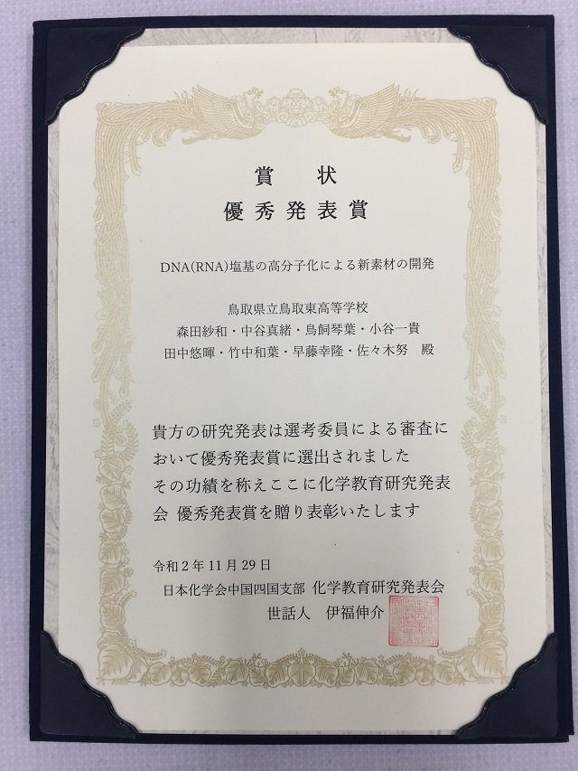

２０２１年度 課題研究 始動！
2021年4月13日 19時57分４月１３日（火）に今年度の課題研究が始まりました。

| 課題研究 |
４月１３日（火）に今年度の課題研究が始まりました。
口頭発表の部
最優秀賞 「ポリアニリン類を用いた水溶系高電圧電池の開発」
去年に続き、口頭発表の部最優秀賞を二年連続で受賞しました！！
令和３年１月２６日（火）６・７限に、本校しののめ館１階にて課題研究発表会（本選）が開催されました。
令和３年１月１９日（火）の５・６・７限に、令和２年度課題研究発表会（予選）が開催されました。
１１月２８日（土）２９日（日）に開催された日本化学会中国四国支部化学教育研究発表会がオンラインで開催されました。昨年度の理数科２年生の課題研究「DNA（RNA）塩基の高分子化による新素材の開発」が優秀発表賞を受賞しました。
詳しい内容は、日本化学会中国四国支部に掲載されています。
